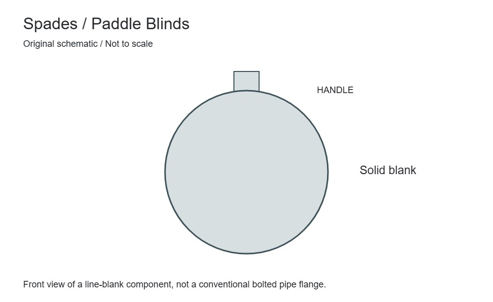
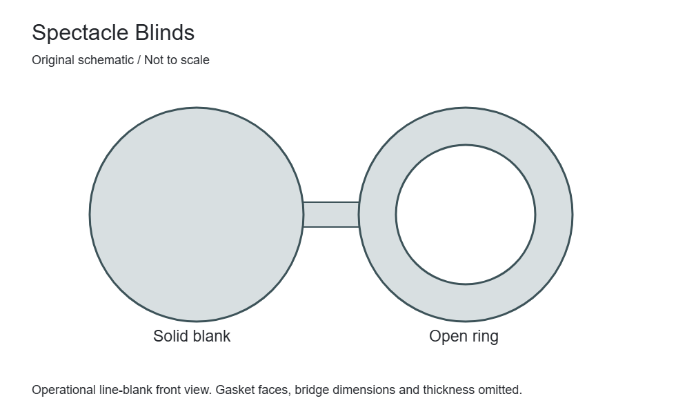
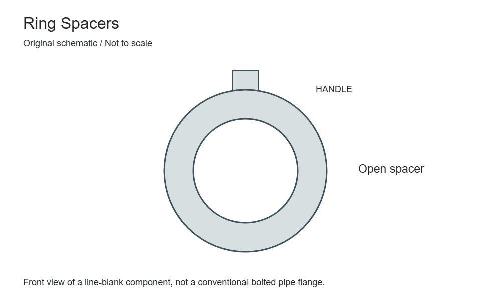
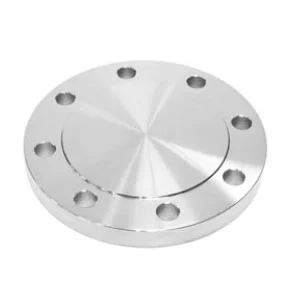

Closure & measurement
Spades / Paddle Blinds
A spade is a solid line blank with a handle, installed between flanges for a specified isolation condition. It is used with a separately identified matching spacer arrangement.


Closure & measurement
A spectacle blind joins a solid blank and an open ring with a connecting bridge. One side or the other is positioned in the flange joint to define the line condition.
This is a line-blank component installed between mating flanges, not a conventional bolted blind flange. ASME B16.48 is the reference for operational line blanks within its scope. Thickness, facing, material and the mating-joint arrangement must be coordinated under the project requirements.
Compare flange typesSpecify the nominal size, rating, material and gasket seating required for both positions. Check bridge clearance and handling space against the actual flange assembly.
Changing the line-blank position requires the site isolation, depressurisation and permit procedures. This catalogue description is not an instruction for operating or opening a pressurised joint.
Define Spectacle Blinds as part of the complete joint. These fields identify required engineering data; they are not universal dimensions or a declaration of available sizes.
| Parameter / designation | Technical information | Selection requirement |
|---|---|---|
| Nominal size and bore | State the nominal connection size separately from the actual bore or pipe outside diameter. | A matching size label does not establish matching internal geometry. |
| Outside diameter and thickness | Identify the finished flange diameter, minimum thickness and any hub or collar projection. | Include the drawing datum and units for replacement measurements. |
| Bolt circle and holes | Record pitch-circle diameter, hole quantity, hole diameter and any special orientation. | Check against the mating flange; do not infer a bolt pattern from pressure class alone. |
| Gasket-contact surfaces | Specify face form, seating dimensions and surface finish on the assembled joint. | Include gasket designation; a visually similar surface is not evidence of compatibility. |
| Pipe-side interface | Identify weld preparation, socket, thread, collar or other attachment geometry as applicable. | Provide pipe schedule/wall thickness and the connection-specific standard. |
| Design conditions | State design pressure, minimum/maximum temperature, fluid and mechanical loads. | Pressure class is not a pressure value in bar or psi. Use the material-specific rating basis. |
Compare Spectacle Blinds with the related forms or references below. A related product is not necessarily a permissible substitute.
| Related product / reference | Distinction | Check before selection |
|---|---|---|
| Spades / Paddle Blinds | A spade is a solid line blank with a handle, installed between flanges for a specified isolation condition. It is used with a separately identified matching spacer arrangement. | Nominal size, rating, thickness and applicable standard |
| Ring Spacers | A ring spacer is the open component of a separate spade-and-spacer arrangement. Its bore permits the intended flow path while maintaining the specified flange-joint spacing. | ASME B16.48 where applicable or the approved project drawing |
| Blind Flanges | A solid flange closes a flanged opening without a through bore. Its bolted connection allows the closure to be removed for access when the system is safely isolated. | Solid centre; identify any required drilling separately |
Define acceptance requirements for Spectacle Blinds in the purchase order. Required examinations and documents depend on the material, design and project specification.
| Review stage | Information to confirm | Order requirement |
|---|---|---|
| Material identity and traceability | Specification, grade, heat/lot identification and the required material certificate. | Agree documentation and marking before manufacture; visual appearance cannot verify alloy identity. |
| Dimensional verification | Critical dimensions from the selected standard or controlled drawing. | Identify inspection points, tolerances, units and drawing revision. |
| Surface and end condition | Gasket-contact surface, attachment end, edges and any coating exclusions. | State finish and visual acceptance criteria; agree protection of machined surfaces. |
| Supplementary examinations | Any specified PMI, NDE, hardness, impact, corrosion or other tests. | Define the method, sampling and acceptance criteria; tests are not automatically included. |
| Assembly compatibility | Adjoining components, weld or mechanical interface and project service conditions. | Design approval and correct assembly remain separate from a dimensional inspection report. |
| Packing and order release | Quantity, identification, surface protection, documents and delivery destination. | Agree preservation, packaging and release requirements with the order. |
Specification checklist
Availability, dimensions and pressure-temperature suitability are confirmed against your complete enquiry.
| Item | Requirement |
|---|---|
| Standard | ASME B16.48 where applicable, with edition and scope confirmed |
| Mating joint | Nominal size, class, facing and gasket arrangement |
| Clearance | Bridge dimensions, handling space and installation access |
| Material | Grade, thickness, marking and traceability requirements |
| Material & quantity | Exact material designation, quantity and required certification or inspection documents |
Application context
Related connections

Closure & measurement
A spade is a solid line blank with a handle, installed between flanges for a specified isolation condition. It is used with a separately identified matching spacer arrangement.

Closure & measurement
A ring spacer is the open component of a separate spade-and-spacer arrangement. Its bore permits the intended flow path while maintaining the specified flange-joint spacing.

Closure & measurement
A solid flange closes a flanged opening without a through bore. Its bolted connection allows the closure to be removed for access when the system is safely isolated.